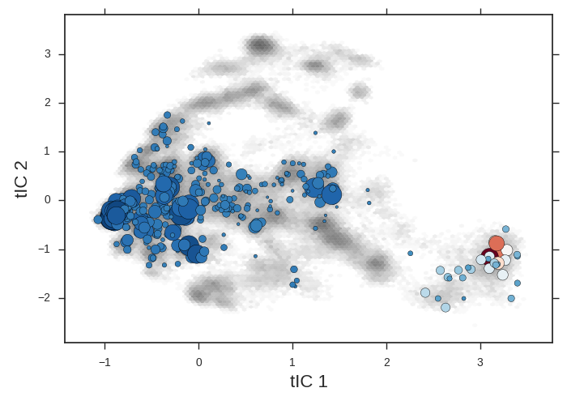

The command-line tool is msmb. Check that it’s installed correctly and
read the help options:
msmb-h
In your own research, you probably have a large molecular dynamics
dataset that you wish to analyze. For this tutorial, we will perform a
quick analysis on a simple system: the Fs peptide.
We’ll use MSMBuilder to create a set of sample python scripts to sketch
out our project:
msmbTemplateProject-h# read the possible options
msmbTemplateProject
This will generate a hierarchy of small scripts that will handle the
boilerplate and organization inherent in MSM analysis.:
Each subsequent step in the MSM construction pipeline is a subdirectory.
Retrieve the Fs peptide example data by running:
python1-get-example-data.py
Ensure that you now have a directory named fs_peptide with 28 xtc
trajectories in it and a pdb topology file named fs-peptide.pdb.
Feel free to load one of these trajectories in VMD to get a sense of
what they look like. Ensure that the symlinks top.pdb and trajs
resolve to the correct place. We use symlinks to map your filenames
to into “standard” msmbuilder names. For example,
if your set of trajectories was stored on another partition, you could
use a symlink to point to the folder, name it trajs, and the scripts
will work without modification.
Begin our analysis:
cdanalysis/
We first generate a list of our trajectories and associated metadata.
Examine the gather-metadata.py script. Note that it uses the xtc
filenames to generate an integer key for each trajectory. The script
also extracts the length of each trajectory and stores the xtc filename:
Sometimes you’ll have many different length-ed trajectories and
this histogram will be interesting. All of our trajectories are 500 ns
though.¶
The plot script contains several example functions of computing statistics
on your dataset including aggregate length. It will also generate an html
rendering of the table of metadata. Exercise: modify the
script to genereate png images intead of pdf vector graphics for
the plots. Editor’s note: use pdf for preperation of manuscripts
because you can
infinitely resize your plots.
We’ll start reducing the dimensionality of our dataset by transforming
the raw Cartesian coordinates into biophysical “features”. We’ll use
dihedral angles. The templated project also includes subfolders landmarks
and rmsd for alternative approaches, but we’ll ignore those for now:
cddihedrals/
Examine the featurize.py script. Note that it loops through our trajectories
using the convenience function itertrajs (which only ever holds one
trajectory in RAM) and calls DihedralFeaturizer.partial_transform()
on each. Read more about featurizers and MSMBuilder
API patterns. Run the scripts:
pythonfeaturize.py
pythonfeaturize-plot.py
The plots will show you a box and whisker plot of each feature value. This
is not very useful, but we wanted to make sure you can plot something
for each step.
Exercise: include chi1 and chi2
angles in addition to the default phi and psi
angles.
Dihedrals are too numerous to be interpretable. We can use tica
to learn a small number of “kinetic coordinates” from our data:
cdtica/
Examine tica.py. Note that it loads the feature trajectories, learns
a model from them by calling fit() and then transforms the feature trajectories
into “tica trajectories” by calling partial_transform()
on each (see api patterns). The MSMBuilder API does not
keep track of units. Our data was saved every 50 ps (Editor’s note: this is
way too frequent for a “real” simulation). The template script for learning
our tica model sets the lag_time parameter to 10. This means 10 steps
in our data. This translates to 500 ps here. Let’s use something a little
longer like 5 ns (= 100 steps). Edit the lag_time parameter to 100 and
learn the model:
tICA heatmaps provide a convenient 2d projection of your data
onto which you can overlay more interesting info.¶
The tICA plotting script makes a 2d histogram of our data. Note the apparent
free energy well on the left of the figure. We might suspect that this is
the folded state and the x-axis is an unfolding coordinate. We’ll use
this tica heatmap as a background for our further plots. tICA is extremely
useful at taking hundreds of dihedral angles (for example) and distilling it
into a handful of coordinates that we can plot.
We can sample configurations along a tIC to inspect what that tIC “means”.
Another common strategy for interpreting tICs is to inspect prominent
(most non-zero) coefficients corresponding to particular features (dihedrals).
A common tactic is to color residues based on their tIC loading. Example
scripts to set up VMD for this will be included in a later release. Here,
we simply draw configurations along a tIC direction:
This produces a trajectory of conformations, saved as tica-dimension-0.xtc.
Exercise: Save the conformations as a dcd trajectory instead.
You can load this trajectory in VMD and inspect the particular tIC:
vmdtop.pdbtica-dimension-0.xtc
Align the structures and apply some “smoothing”.
Exercise: Sample the second tIC. Note that it probably isn’t an
interesting coordinate in this case.
We can group conformations that interconvert rapidly by using off-the-shelf
clustering algorithms on our kinetic coordinates (tICs):
cdcluster/
By default, we generate 500 clusters using a form of KMeans. Read more
about clustering.
Exercise: try a different number of clusters or a different
clustering algorithm. Run the clustering scripts:
pythoncluster.py
pythoncluster-plot.py
Note that the tIC heatmap provides a convenient space onto which we project
our cluster centers.
With our states defined, we count the transitions between them. An MSM
is simply states and rates. First we make a “microstate” MSM consisting
of many, small states:
cdmsm/

The microstate centers are shown as circles on the tIC heatmap.
They are sized according to state population. They are colored
according to the first dynamical eigenvector. The slowest
processes is a transition from red states to blue.¶
The MSM lag-time is a parameter that cannot be optimized using gmrq.
You can use the timescales.py script to check how the model timescales
would react to changing the lag-time. We’ll just use a lag-time of 5 ns.
Remember from above that we have to keep track of units. 5 ns is 100 steps.
Edit microstate.py and set lag_time=100:
By default, each frame will be 1 lag-time unit. Here, that is 5 ns.
Exercise: Use the n_steps and stride parameter to sample
a 200 frame movie with 50 ns steps.
You can load the trajectory in VMD and watch the Fs-peptide stochastically
fold and unfold: